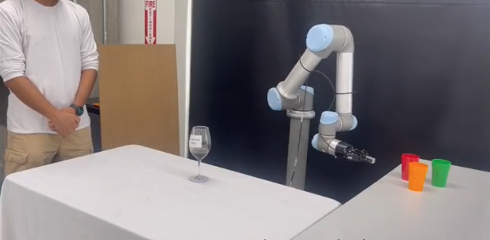

Contact
Arizona State University
Brickyard Engineering 594
699 S Mill Ave
Tempe, AZ 85281
Email: yzhan442@asu.edu
Web: crslabasu.github.io
Research support from the
following funding agencies
is gratefully acknowledged:


I am an Associate Professor in the Computer Science and Engineering Department at Arizona State University. My research interests lie in the intersection of AI and Robotics, focusing on innovating and applying AI and Machine Learning methods to human-robot teaming, multi-agent systems, distributed robotic systems, human-robot interaction, planning and automated reasoning. The goal of my research is to bring heterogeneous agents, such as humans and robots, seamlessly together to improve our everyday lives, and achieve complex tasks that have never been achieved before.
About me: Prior to my current position, I was a research assistant professor at Arizona State University from 2015-2016. Before that, I worked at the Yochan AI Research Group as a postdoctoral researcher from 2013-2015. I received my PhD degree at the Distributed Intelligence Lab in the Department of Electrical Engineering and Computer Science from the University of Tennessee in August 2012, under the advising of Prof. Lynne E Parker. My PhD research was on significantly extending the state-of-the-art distributed robot systems by enabling heterogeneous robots to form and execute complex coalitions in dynamic environments.
I am always looking for self-motivated students to join CRS to work on our EXCITING PROJECTS! If you are interested, please contact me with your resume, research or personal statement, and a most relevant reference (e.g., current supervisor, advisor or collaborator). Current PhD, MS and undergraduate students at ASU may directly contact me for an appointment. Check out CRS publications HERE!
UPDATES & NEWS
 February, 2024: One paper has been accepted to appear in ICAPS 2024! Congrats to Akku and Andrew!
February, 2024: One paper has been accepted to appear in ICAPS 2024! Congrats to Akku and Andrew!June, 2023: One paper has been accepted to appear in IROS 2023! Congrats to Andrew and the co-authors!
Juny, 2023: Upasana has successfully defended her MS thesis! Congratulations, Upasana!
April, 2023: One paper has been accepted to appear in IJCAI 2023!
Jan, 2023: One paper has been accepted to appear in AAMAS 2023 as an extended abstract!
Dec, 2022: Congratulations to Upasana and Ethan for participating in the MORE program!
Nov, 2022: Mitchell has successfully defended his MS thesis! Congratulations, Mitchell!
Sep, 2022: One paper has been accepted to appear in NeurIPS 2022! Congratulations, Ze!
July, 2022: Calvin has successfully defended his MS thesis! Congratulations, Calvin!
June, 2022: Ze has successfully defended his PhD dissertation! Congratulations, Dr. Gong! Ze will be joining NUS as a postdoctoral scholar.
Jan, 2022: One paper has been accepted to appear in RA-L/ICRA!
July, 2021: Kevin successfully defended his MS thesis! Congratulations, Kevin!
June, 2021: One paper has been accepted to appear in IROS 2021! Congratulations, Akku!
June, 2021: Mehrdad has successfully defended his PhD dissertation! Congratulations, Dr. Zakershahrak!
May, 2021: Congratulations to Kevin and Calvin for participating in the MORE program!
Mar, 2021: Excited to receive the NSF CAREER award!
Feb, 2021: Two papers have been accepted to appear in ICRA 2021! Congratulations, Mehrdad! Congratulations, Winston!
Jan, 2021: Two papers have been accepted to appear in HRI 2021 as LBR! Congratulations, Andrew! Congratulations, Akku! Andrew's paper will also appear in the VAM-HRI workshop.
Nov, 2021: Akshay successfully defended his MS thesis! Congratulations, Akshay!
Oct, 2020: I gave an invited talk at the Trends and Advances in Machine Learning and Automated Reasoning for Intelligent Robots and Systems workshop at IROS 2020 on "Human-aware Planning and Learning in Intelligent Robotics".
Sep, 2020: I will serve as a Co-Chair for the Robotics Track at ICAPS 2021.
June, 2020: One paper on Online Explanation Generation for Human-Robot Teaming has been accepted to appear in IROS 2020! Congratulations, Mehrdad!
May, 2020: Congratulations to Laukik for participating in the MORE program, and Michael for the FURI program
Nov, 2019: One paper on What is it You Really Want of Me? Generalized Reward Learning with Biased Beliefs about Domain Dynamics has been accepted to AAAI 2020 for oral presentation! Congratulations, Ze!
Nov, 2019: To serve as a PC member for AAMAS 2020.
June, 2019: One paper on Online Explanation Generation for Human-Robot Teams has been accepted to ICAPS Explainable AI Planning workshop Congratulations, Mehrdad!
May, 2019: Served as an Associate Editor for IROS 2019!
March, 2019: One paper on Explicability as Minimizing Distance from Expected Behavior has been accepted to AAMAS as an extended abstract. Congratulations, Anagha!
March, 2019: Zakk received the Outstanding Undergraduate Award (one among all CSE students)! Congratulations, Zakk!
March, 2019: Ze and Mehrdad received the University Graduate Fellowship. Congratulations!
June, 2018: Two papers have been accepted to be presented at RO-MAN 2018 in Nanjing, China! Congratulations to Ze and Mehrdad (his first paper at CRS)! See CRS publications for details.
June, 2018: Two papers have been accepted to be presented at RSS 2018 workshops! See CRS publications for details.
May, 2018: Served as an Associate Editor for IROS 2018!
April, 2018: Anagha's paper has been accepted to ICAPS 2018 Workshop on Explainable AI Planning (XAIP). Congratulations Anagha!
April, 2018: Our ICRA 2018 paper is a finalist for the Best Paper award in Cognitive Robotics!
March, 2018: Ze received the University Graduate Fellowship, University Travel Award and ICRA Travel Award. Congratulations Ze!
Feb, 2018: Ze's paper on Robot Signaling its Intentions in Human-Robot Teaming is accepted at HRI workshop on Explainable Robotic Systems 2018. Congratulations Ze!
Jan, 2018: Ze's first paper on Temporal Spatial Inverse Semantics for Robots Communicating with Humans is accepted at ICRA 2018. Congratulations Ze!
Nov, 2017: Daniel Hill and Zachary Ayers successfully finished their FURI projects and presented their FURI posters! PICTURES HERE!
Sep, 2017: Zhaoqun Zhong from HIT joined CRS as a PhD student. Welcome Zhaoqun!
August, 2017: Congratulations to Daniel Hill and Zachary Ayers for receiving their FURI awards!
August, 2017: Li Wang will be joininig us for one year as an exchange student from BIT!
June, 2017: Mehrdad Zaker Shahrak joined CRS as a PhD student. Welcome Mehrdad!
April, 2017: Our paper on explanation generation is accepted to IJCAI 2017!
March, 2017: One of the projects from my Fall 2016 class led to a project into the U.S. Imagine Cup Final! Check out the latest HERE!
Jan 15, 2017: Three papers accepted to ICRA 2017!
December 27, 2016: Happy Holidays! Finally, student demos for my Fall 2016 class are posted here.
November 13, 2016: I will serve as a senior PC member for IJCAI 2017 in Melbourne, Australia.
September 10, 2016: Ze Gong joined CRS as a PhD student. Welcome Ze!
September 9, 2016: The Cooperative Robotic Systems (CRS) lab website is alive!
August 16, 2016: I joined Arizona State University as an Assistant Professor. I am looking for passionate students to join my lab. If you are interested, please contact me with your resume, a description of your experience, researach interest, and long-term goals.
June 19, 2016: I gave an invited talk at RSS workshop on Minimality and Design Automation.
May 23, 2016: I will serve as a PC member on the Intelligent Robotics and Multi-Agent Systems (IRMAS) track of SAC, 2017.
Here are some of the robots we are currently working with:
